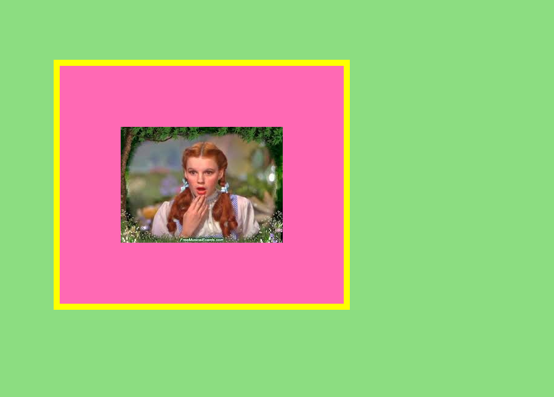
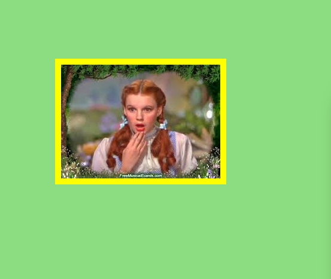
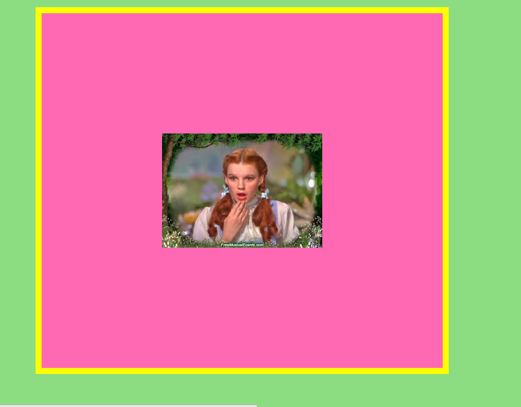
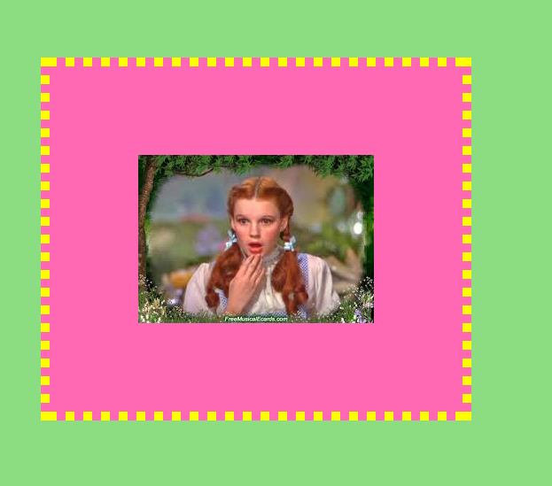
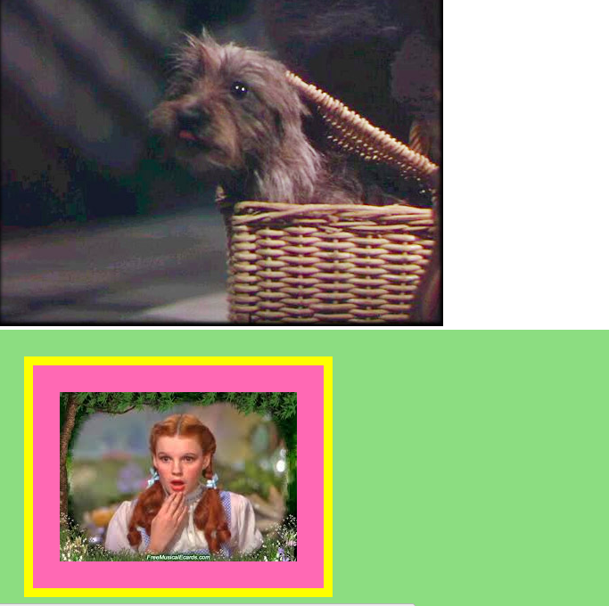
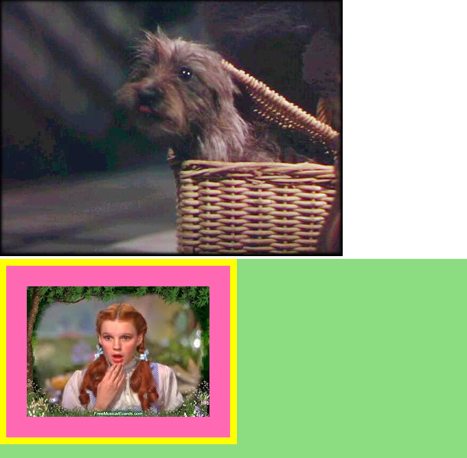
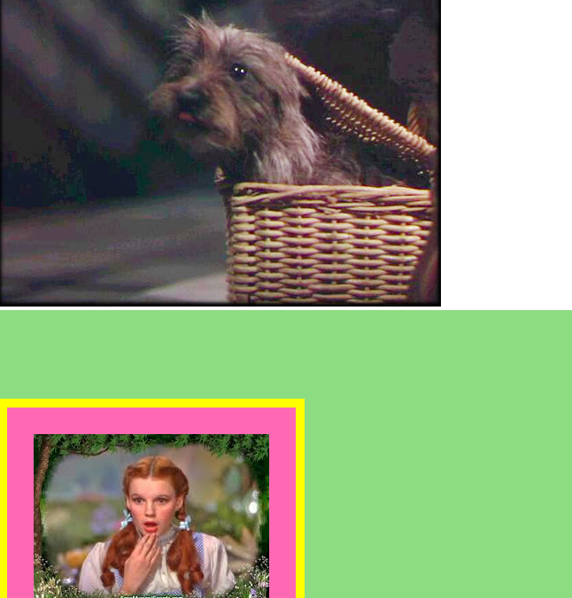

Alright, let's say we're building a fan site about the Wizard of Oz (don't ask questions, you super fan, you!). We want to put a picture of Dorothy on our page, and at some point, move her around and maybe put a nice little frame around her image. But first, we need to understand the foundation of how CSS sees the picture: an element, surrounded by padding, a border, and a margin, respectively. Let's get our girl Dorothy to demonstrate.
To make it easier to see what we're talking about, I'm going to use color to fill in the margin and the padding. When you start your own CSS projects, the margin and padding will be transparent.
So first, we've got Dorothy. Dorothy is our element--she's the content, the big kahuna. Elements are any 'things' in your html: images, links, text, lists.
Shocking, I know!
Now, check out the pink space. That's our padding. The padding is the space between the space and the border. Okay, let's see what the padding looks like set to 0px:
Look at Dorothy in relation to the yellow border. Do you see any pink space?
Now, let's set our padding to 300px:
Whoa! See the space between Dorothy and the border? That's our padding.
Alright, so you know what your border is (the yellow guy). It's there for a little visual flourish. You can make it bigger, smaller, dotted, dashed, any color, or, you can make it entirely invisible.
Check me out, I'm dotted!
Let's check out our margin. See that green section? That's the margin. The margin is the distance between the border and the any other objects around your element (other elements, the edsge of the screen, etc). For now, let's bring in Toto to help us out.
Oh hey Toto
Let's start out by setting the top margin to 0px. See that? Dorothy moves is directly underneath Toto. No green on top.
Now, let's set our top margin to 100px. What we're doing here is creating an 100px buffer zone on the top side of Dorothy, where no other element can touch her. This, in turn, moves her 100px towards the bottom of the page. Check it out:
And there we have it. Now go build your own CSS Emerald City.